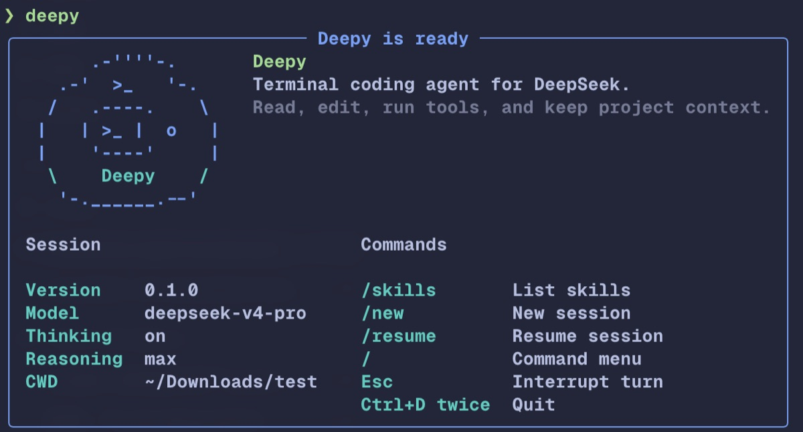
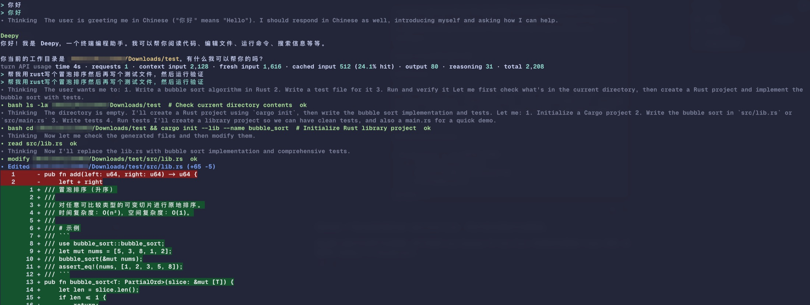
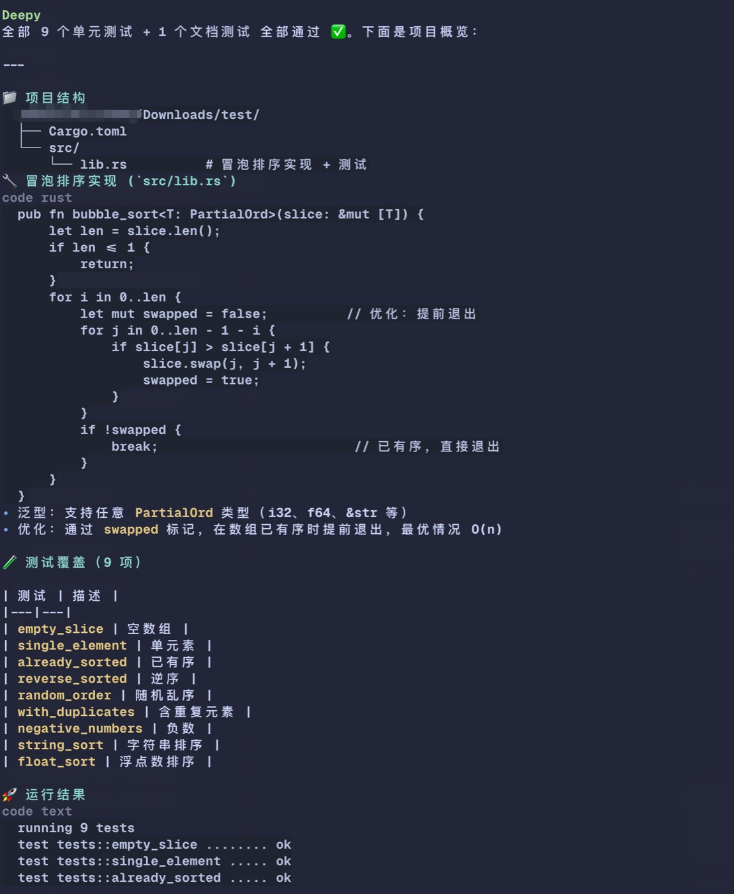
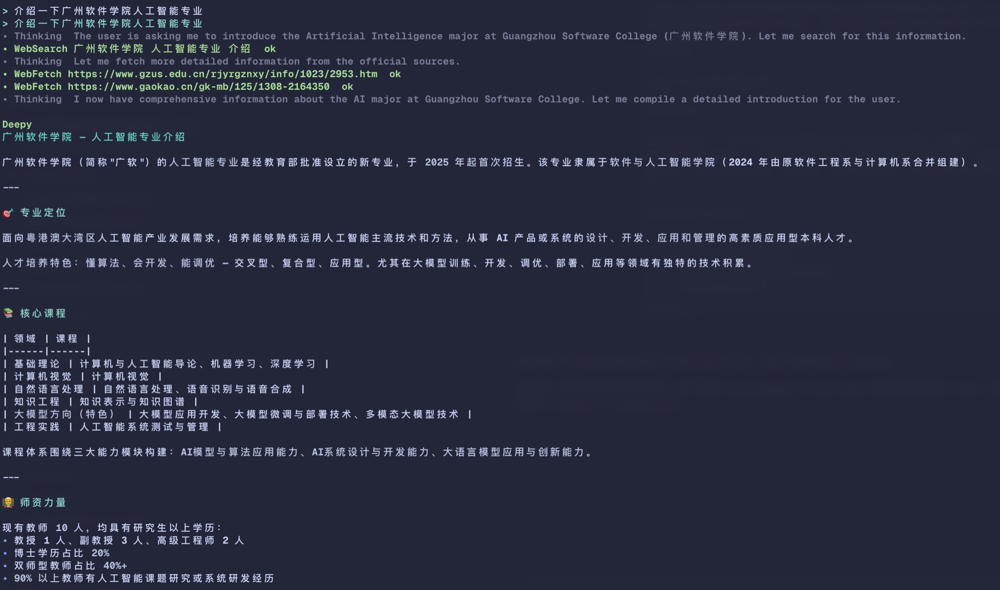

为 DeepSeek 编程会话而设计
Deepy 是一个 Python CLI，通过 OpenAI Agents SDK 调用 DeepSeek。它围绕 thinking 模式、长上下文、上下文缓存和可读的终端 UI 进行优化，让 Agent 的 工作过程清晰可见。
终端优先的工作流
Deepy 把对话、工具调用、代码修改和验证输出放在同一个终端上下文里。
> 开发
编写代码并运行验证
让 Deepy 实现功能、补充测试、运行项目命令并总结结果。diff 会直接在终端中 渲染，方便你快速审查改动。

> 总结
把执行结果整理成说明
Deepy 可以把命令输出和项目文件整理成可读的 Markdown，包括项目结构、 实现细节和测试覆盖。

> 查资料
检索并抓取来源页面
WebSearch 用于查找最新资料；WebFetch 可以读取指定 URL，在需要精确网页 内容时给出有来源依据的回答。

安装
发布后可以从 PyPI 安装，也可以直接安装 GitHub 上的最新版本。
uv tool install deepy-cli
# 命令仍然是：deepyuv tool install git+https://github.com/kirineko/deepy.gitdeepy config setup
cd your-project
deepy